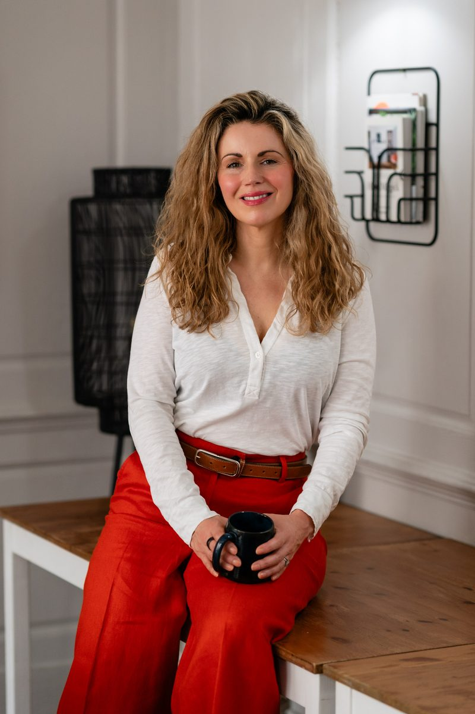

1:1 Therapy & Coaching
A deeply personalised six-month experience that blends emotional depth with practical transformation, so you can finally move beyond survival mode.
Support where you are fully seen, heard and understood
This is a six-month integrative therapy and coaching experience for people who are tired of managing everything alone. Insight on its own is rarely enough, so alongside understanding, we build in support, reflection, accountability and nervous-system safety.
Some sessions feel more reflective and therapeutic; others focus on practical shifts, boundaries and self-trust. The work is always shaped around you and what feels most supportive at each stage of your journey.
Book a Free Consultation
Depth, support and forward movement
Therapy helps us understand and heal the roots of your struggles. Coaching helps us turn that understanding into meaningful change in everyday life. Together, they create a balance of depth, support and forward movement.
Everything you need to feel properly supported
Your six months together are built around continuity and care, not just the hour we spend in session, but the moments in between.
12 One-to-One Sessions
Regular therapy-and-coaching sessions over six months, giving us the time and space for change that genuinely lasts.
Between-Session Support
Access to guidance via email and WhatsApp between sessions, because healing happens in everyday moments too.
Personalised Reflections & Tools
Tailored practices and exercises designed around your needs, so the work feels practical, supportive and sustainable.
Nervous-System Regulation
Gentle, practical work to help your body feel safe enough to slow down, so calm stops feeling so out of reach.
In-Session Guided Meditations
Gentle but powerful guided practices for emotional clarity, self-connection and a felt sense of inner safety.
Profiling Tools
Where appropriate, we may use evidence-informed profiling tools to help you better understand your natural strengths, patterns and ways of relating to yourself and others.
What changes over our time together
This is a space to understand yourself properly and build a kinder, steadier relationship with who you are. Together, we work to…
This work will be a good fit if…
- You appear capable on the outside but feel anxious, overwhelmed or exhausted underneath
- You spend a lot of time overthinking, second-guessing yourself or trying to get things “right”
- You find it difficult to switch off, rest, or simply be without feeling guilty
- You often put other people’s needs ahead of your own
- You feel responsible for keeping everyone else happy
- You are tired of coping and want something deeper than tips, strategies and quick fixes
- You want to understand why you think, feel and respond the way you do
- You are ready to build a kinder, more trusting relationship with yourself
- You have spent so long being who everyone else needs you to be that you’ve lost touch with who you are underneath it all
The goal isn’t to become a different person. It’s to feel safe enough to be fully yourself.
Real, lasting change takes more than a few sessions
Many of the people I work with have spent years in patterns of anxiety, overthinking, burnout or survival mode. These are often deeply ingrained, linked to past experiences and long-standing ways of coping.
A longer journey gives us time to build genuine trust, understand the deeper patterns, and practise new ways of responding — supported through real life as it happens.
The six-month structure also gently removes the pressure so many high-functioning people put on themselves to “fix everything quickly.” Real growth tends to happen gradually, through consistency and feeling properly supported over time.

An investment in feeling like yourself again
Because every package is shaped around the level of support that’s right for you, I share the investment personally during your free consultation, once we both understand what you need.
Flexible payment options
I want this work to feel as manageable as possible, so you can choose what suits you best:
- Pay in full upfront
- Spread the cost with monthly instalments
- Secure your place with a deposit, with the first instalment paid on the day of your first session
Before coaching, I was living in an anxious state most of the time. Through working on the impact of my relationship with my father and gaining clarity on the kind of person I wanted to become, I’ve developed more self-forgiveness, healthier relationships and the confidence to start my own business venture.